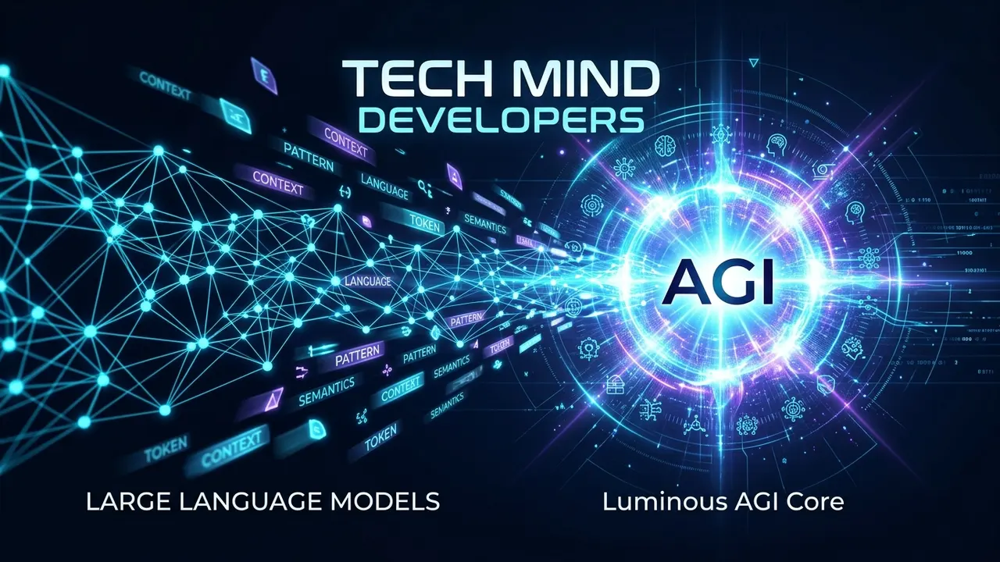

LLM vs AI vs AGI Explained: Differences, Real Capabilities and the Future of Machine IntelligenceLLM vs AI vs AGI Explained: Asli Antar, Aaj Ki Capabilities Aur Machine Intelligence Ka Future
September 27, 2026 5 min read1 views Tech Mind Developers Engineering Team

Every business owner today hears buzzwords like Artificial Intelligence, Large Language Models, and Artificial General Intelligence thrown around in sales pitches and tech news. When a company wants to automate customer support or speed up report writing, founders often wonder whether they are buying real intelligence or just a fast text predictor.
The market is flooded with claims that human-level software is only months away. In reality, there is a clear technical line separating the general umbrella of AI, the practical language models we use every day, and the still theoretical concept of AGI. Understanding this difference helps you invest your tech budget wisely without falling for hype.
What is Artificial Intelligence, LLM, and AGI: The Direct Answer
Quick Answer: Artificial Intelligence is the broad field of building software that mimics human tasks, while Large Language Models are practical neural networks trained to predict and generate text based on vast datasets. Artificial General Intelligence represents a future theoretical system capable of independent reasoning, common sense, and autonomous learning across any domain without human guidance.
Artificial Intelligence represents the entire field of smart computing, from basic accounting rules to computer vision in autonomous vehicles. AI is not a single tool, but an established computer science discipline evolving since the 1950s.
Large Language Models, or LLMs, are a practical branch of modern AI. Engines like GPT, Gemini, and Claude are neural networks trained on vast datasets. They convert words into numerical tokens and calculate the most probable next word, producing fluent answers by matching complex language patterns.
Artificial General Intelligence, or AGI, sits on an entirely different level. Today's software is narrow; a chess algorithm cannot book flights, and an LLM cannot fix broken server hardware without human supervision. AGI refers to autonomous software possessing human-level intellect, capable of independent reasoning and cross-domain learning without task-specific retraining.
How Today's Large Language Models Actually Work Under the Hood
To use LLMs effectively in business, strip away the mystery. An LLM lacks consciousness or intent, relying purely on the transformer deep learning architecture introduced in 2017.
When you submit a prompt, the model converts words into numerical tokens mapped across multi-dimensional space. Passing these values through billions of parameter weights predicts the most statistically probable response.
Because LLMs operate on probability, they can hallucinate plausible yet incorrect facts. If an LLM lacks your exact pricing data, it may generate an incorrect number. That is why engineering teams anchor models to verified enterprise databases using Retrieval-Augmented Generation.
Key Differences Across Capabilities and Architecture
To see how these technologies compare in real operational terms, review the structural breakdown below:
Scope of Intelligence
AI covers all machine logic. LLMs excel only at language and token patterns. AGI aims for universal reasoning across all human skills.
Operating Mechanism
Traditional AI runs on rules. LLMs use transformer neural networks. AGI will require adaptive architectures beyond next-token guessing.
Real-World Adaptability
LLMs need retraining or prompt context for new domains. AGI would learn new industries instantly like a human apprentice.
Training Requirements
LLMs demand millions of dollars in GPU clusters and scraped internet data. True AGI would learn from minimal real-time interaction.
Reliability and Errors
LLMs hallucinate and lack ground truth. AGI would verify facts, cross-check sources, and correct its own logical mistakes.
Commercial Availability
AI and LLMs are fully ready for commercial business today. AGI remains an active research goal with no working deployment.
Practical Engineering Advice
Do not hold back your automation plans waiting for AGI to arrive. Modern LLMs paired with custom APIs, vector search, and strict validation rules can already automate 70% of manual desk workflows today.
The Road to AGI: What is Missing and What Lies Ahead
Tech headlines frequently debate when AGI will arrive. Some lab leaders predict human-level machines before 2030, while computer science veterans point out massive unsolved hurdles. The biggest missing piece in modern language models is genuine reasoning.
Predicting words differs from understanding cause and effect. An LLM answers trick reasoning questions only if similar patterns existed in its training data, stumbling when faced with novel edge cases.
Achieving true AGI will require combining transformers with symbolic logic, physical world models, and autonomous goal-setting. Until then, treat LLMs as high-speed productivity assistants rather than autonomous thinkers.
How Businesses Can Take Advantage of Modern AI Today
Here is the good news: you do not need to wait for AGI to transform your daily operations. Smart business owners across Delhi NCR, Mumbai, and international trade hubs are already using practical language models to save hundreds of manual work hours each week.
At Tech Mind Developers, this is exactly what we build. Through our tailored custom software development, we combine enterprise databases with dedicated AI agent development services and smart AI chatbot automation services. Instead of letting staff spend three hours a day copying numbers from messy PDF invoices or answering repetitive pricing questions on WhatsApp, we connect an intelligent agent directly to your inventory ledgers and ERP software. The system handles customer inquiries in seconds, checks real-time stock, and passes clean billing data straight to your accounts team.
Whether you need a high-converting web platform from our team as a trusted website development company in Okhla, Delhi, or specialized industrial ERP workflows through our custom software development in Aligarh, the focus is always on real business profitability. Practical automation delivers measurable savings today without waiting for science fiction to arrive.
Frequently Asked Questions
An LLM is a specialized statistical engine that predicts the next text token based on patterns in training data. AGI refers to a hypothetical autonomous machine system capable of human-level reasoning, cross-domain common sense, and independent problem-solving across any intellectual task.
No. Most leading AI researchers agree that next-token prediction alone cannot solve abstract reasoning, genuine causal understanding, or real-world physical grounding. Reaching AGI will require new architectures beyond transformer-based language models.
Companies can deploy private LLMs with Retrieval-Augmented Generation (RAG) to automate customer support, process vendor invoices, draft complex documentation, and connect internal databases for instant answers.
Tech Mind Developers Engineering Team
AI Systems and Enterprise Software Specialists
We design and deploy custom enterprise software, autonomous AI workflow agents, and scalable cloud applications for businesses across India and global markets.
Ready to Put AI to Work in Your Business?
Stop waiting for future promises. Let our senior engineering team build practical, secure LLM automations that save your team hours every single day.
Aaj har business owner internet, news aur sales calls mein Artificial Intelligence, Large Language Models aur Artificial General Intelligence jaise bade terms sunta hai. Jab koi company apne customer support ko automate karna chahti hai ya staff ka daily kaam tez karna chahti hai, toh founders ke dimaag mein ek simple sawal aata hai ki kya yeh sach mein koi dimaag hai ya sirf ek tez text predictor hai.
Market mein har roz naye daave aate hain ki insaan jaisa sochne wala software bas aane hi wala hai. Lekin reality mein AI ke broad concept, aaj ke practical LLM tools aur future ke AGI mein ek solid technical farq hai. Is farq ko samajhna zaroori hai taaki aapka tech budget bina kisi fake hype ke sahi jagah invest ho sake.
Artificial Intelligence, LLM Aur AGI Kya Hain: Direct Answer
Quick Answer: Artificial Intelligence computer science ka poora field hai jo machines ko human tasks sikhata hai, jabki Large Language Models trained neural networks hain jo text data ke patterns predict karte hain. Artificial General Intelligence ek future theoretical system hai jo insaan ki tarah bina kisi human help ke kisi bhi field mein khud seekh kar complex decision le sakega.
Artificial Intelligence smart computing ka poora field hai, jisme basic accounting rules se lekar self-driving cars ka computer vision shamil hai. AI koi ek single product nahi, balki 1950s se chala aa raha computer science discipline hai.
Large Language Models, yaani LLMs, isi AI ka practical hissa hain. GPT, Gemini aur Claude jaise models bade datasets par train hote hain. Yeh text ko numerical tokens mein convert karke agla sabse probable word calculate karte hain aur complex language patterns match karte hain.
Artificial General Intelligence, yaani AGI, bilkul alag level par hai. Aaj ka AI narrow hai; chess algorithm flight book nahi kar sakta aur chatbot server hardware fix nahi kar sakta. AGI ka matlab autonomous software se hai jiske paas insaan jaisa intellect ho aur jo bina training ke har field mein decision le sake.
Aaj Ke Large Language Models Asal Mein Kaise Kaam Karte Hain
Business mein LLMs use karte waqt inki reality samajhna zaroori hai. LLM ke paas koi feelings ya conscious dimaag nahi hota, balki yeh 2017 ke transformer deep learning architecture par kaam karta hai.
Jab aap prompt dete hain, toh model text ko tokens mein badal kar multi-dimensional space mein map karta hai. Arbon parameter weights ke through calculations karke model sabse probable statistical response nikalta hai.
Kyunki LLM probability par chalta hai, isliye yeh galat baatein yaani hallucinations bhi create kar sakta hai. Agar model ke paas aapka exact price data nahi hai, toh galat number bhi aa sakta hai. Isiliye engineering teams LLMs ko private database se RAG ke zariye jodti hain.
Capabilities Aur Architecture Ke Buniyaadi Antar
In teeno technologies ke real operational farq ko asani se samajhne ke liye neeche diya gaya breakdown dekhein:
Intelligence Ka Scope
AI poori smart computing hai. LLM sirf text aur tokens handle karta hai. AGI insaan jaisi har field ki samajh chahta hai.
Kaam Karne Ka Dhang
Traditional AI rules par chalta hai. LLM transformer neural network use karta hai. AGI ko naye thinking models chahiye honge.
Real-World Adaptability
LLM ko naye business ke liye context dena padta hai. AGI bina sikhaye naye kaam turant seekh lega.
Training Ki Zaroorat
LLM ko arbon data points aur heavy GPUs chahiye. Asli AGI real-time experience se bahut kam data mein seekhega.
Galti Aur Reliability
LLM hallucinate kar sakta hai. AGI apne facts khud check karega aur apni galatiyan turant pakad kar theek karega.
Commercial Availability
AI aur LLM aaj business ke liye fully ready hain. AGI abhi research stage par hai aur koi working model nahi hai.
Practical Engineering Advice
AGI ke aane ka intezar karke apne automation projects mat rokiye. Aaj ke LLMs ko custom API aur company data ke sath jodkar aap apne 70% manual repetitive tasks ko abhi automate kar sakte hain.
AGI Ka Rasta: Kya Abhi Missing Hai Aur Aage Kya Hoga
Tech duniya mein lagatar behas chalti rehti hai ki AGI kab aayega. Kuch lab founders ka kehna hai ki 2030 tak human-level machine ban jayegi, jabki senior scientists kehte hain ki abhi fundamental technical roadblocks bache hue hain.
Agla word guess karna aur cause-and-effect samajhna do alag cheezein hain. LLM reasoning sawal ka jawab tabhi de pata hai jab waisa pattern uske training data mein ho, nayi unseen problems mein yeh stumble karta hai.
Asli AGI ke liye transformers ke sath symbolic logic aur physical world models jodna padega. Tab tak businesses ko LLMs ko super-fast productivity assistant ki tarah use karna chahiye, na ki autonomous decision maker ki tarah.
Businesses Aaj Modern AI Ka Fayda Kaise Utha Sakte Hain
Sabse acchi baat yeh hai ki apne business ko super-fast aur automated banane ke liye aapko AGI ka saalon tak intezar karne ki bilkul zaroorat nahi hai. Delhi NCR, Mumbai aur export markets ke samajhdar business owners aaj hi practical language models use karke apne staff ke rozana kayi ghante bacha rahe hain.
Tech Mind Developers mein hum rozana yahi practical kaam karte hain. Hamare engineered custom software development mein hum specialized AI agent development services aur responsive AI chatbot automation services jodte hain. Hum generic bots ke bajaye AI ko seedha aapke private database se connect karte hain. Chahe aap trading karte hon ya manufacturing, AI agent WhatsApp par verified rates batata hai aur PDF invoices se data nikaal kar seedha billing ERP mein feed kar deta hai.
Chahe aapko brand presence ke liye fast web portal chahiye ho jiske liye aap hamari website development company in Okhla, Delhi team se jud sakte hain, ya industrial operations ke liye hamare custom software development in Aligarh systems dekh sakte hain, hamara focus hamesha real business profit aur zero manual headache par hota hai.
Frequently Asked Questions
LLM ek statistical engine hai jo training data ke pattern par text predict karta hai. Jabki AGI ek aisi hypothetical machine hogi jo insaan ki tarah har field mein independent logic, common sense aur problem-solving kar sakegi.
Nahi. Top AI researchers ka maanna hai ki sirf agla word guess karke genuine reasoning aur real-world samajh nahi aa sakti. AGI ke liye transformers ke alawa naye architecture ki zaroorat padegi.
Companies private LLMs aur RAG architecture ke zariye customer WhatsApp support, vendor invoice processing, document search aur daily office tasks ko safe tareeqe se automate kar sakti hain.
Tech Mind Developers Engineering Team
AI Systems and Enterprise Software Specialists
Hum pure India aur international clients ke liye custom enterprise software, autonomous AI workflow agents aur modern cloud applications design aur develop karte hain.
Apne Business Mein AI Ko Aaj Hi Kaam Par Lagayein
Future promises ka intezar band kijiye. Hamari senior engineering team se secure aur practical AI automations banwayein jo aapke staff ke rozana kayi ghante bacha sakein.